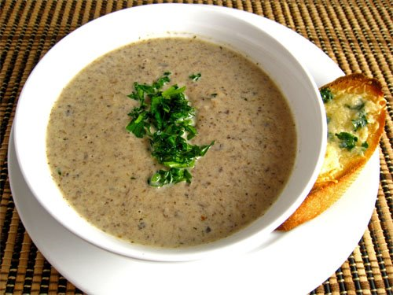

Mushroom Cream Soup

Description
This mushroom cream soup is so delicious, that it is a perfect dish
by itself, but also compliments all other dishes so well. As my personal
favorite soup, I hope this recipe makes you love this soup as much as I do!
The onion caramelization and the touch of thyme is key to this recipe.
Ingredients
- 1/4 cup unsalted butter
- 2 lb sliced fresh mushroom
- 1 onion, diced
- 1 1/2 Tb all-purpose flour
- 6 sprigs fresh thyme
- 2 cloves garlic
- 4 cups chicken broth
- 1 cup heavy whipping cream
- 1 cup water
- salt and pepper to taste
Steps
-
Melt butter in a large pot over medium-high heat. Add mushroom to the pot,
season with salt, and cook until mushrooms give off their juices.
Reduce heat to low and continue to cook until mushrooms turn golden brown.
Set aside few mushroom slices for garnish later. Mix in onions and cook until
onion turns soft and translucent.
-
Stir flour into the pot and cook (stir often) for about 2 minutes. Add garlic cloves
and thyme sprigs to the pot. Pour the chicken stock and water. Bring the heat to simmer
and cook for 1 hour. Remove the thyme bundle.
-
Transfer soup to a blender in smalll batches and puree on high speed until smooth and thick.
-
Return soup to pot and stir in cream. Season with salt and pepper and garnish with
mushroom slives and thyme leaves.